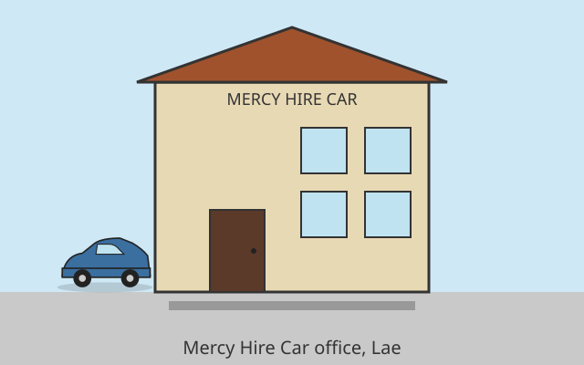

Reliability
We keep our vehicles road-ready and our booking process straightforward.
Reliable Hire Cars in Lae, Morobe Province
Mercy Hire Car is a locally owned and operated hire car business based in Lae, Morobe Province. We started with a simple goal: to give locals, travellers, and businesses in Lae access to safe, affordable, and reliable transport whenever they need it.

Our mission is to provide dependable hire car services that meet the everyday needs of the Lae community while supporting local employment and economic growth in Morobe Province.
We keep our vehicles road-ready and our booking process straightforward.
Every customer is treated with respect, from first enquiry to vehicle return.
As a Lae-based business, we are proud to serve and support our local community.
Our small, dedicated team includes booking staff, maintenance personnel, and experienced drivers who know Lae and the surrounding areas well. We are available during business hours to answer questions and assist with bookings.